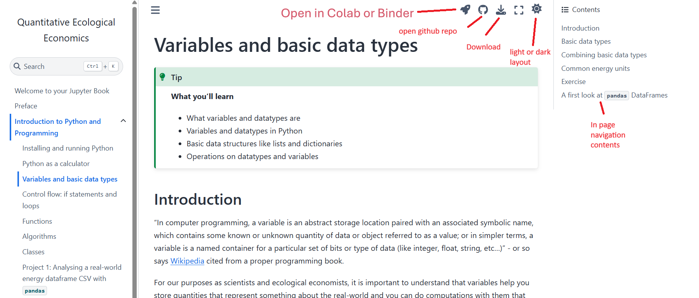

Navigating the online book#
Tip
What you’ll learn
how to use the navigation bar on the left to find your way around the book
how to use the search function to find specific topics or keywords in the book
how to open the materials in google colab to run the code yourself and more
Introduction#
This is the introduction to the online book. You can use the navigation bar on the left to find your way around the book, and the search function to find specific topics or keywords in the book. You can also open the materials in google colab to run the code yourself.
The picture below illustrates a typical page of this book and the most important buttons, and also highlights the within-page content structure on the right.
You can switch on dark or light mode depending on your preference. I often use darkmode for coding and other things, especially in my free time.
One of the most important buttons for us throughout using this resource is that you know, if you get stuck in your notebook and coding efforts, that you can open any page of this book as notebook in google colab run it there or in Binder, a similar open-source software. This is the little rocket in the give button menu in the middle top right.
Further you can download any page and directly and completely run them in you local infrastucture.
Any questions?
from IPython.display import Image, display
# This renders the file directly without loading it as a PIL object first
display(Image(filename='screenshot_with_pointers.png'))
